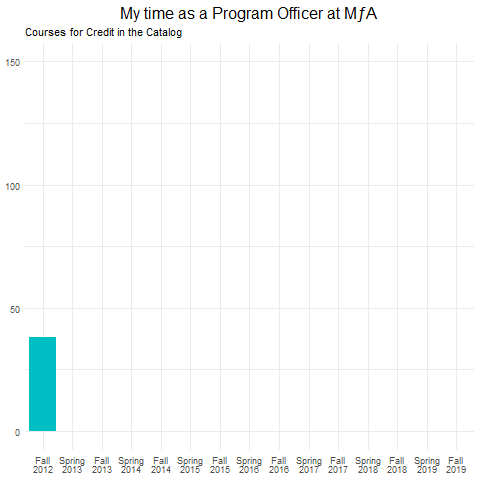
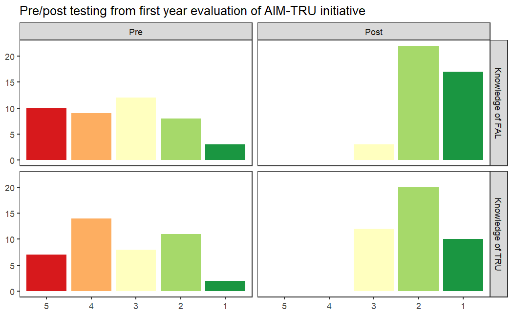

![]()
Note - this post was done before my work at EL Education, where Quarto and R are utilized not just for analysis, but for communication as well. Future posts will center code blocks and be easier for others to work with.
My time at MƒA
As it will be announced in the next week, due to a desire for research to be an external and not internal initiative at MƒA , it is the desire of the board and leadership to cut my department, meaning I will be leaving the organization in the coming months, thankfully with the support of my directors in the job search.
I have grown each of the programs I have been a part of, and while it is time to look for opportunities to grow elsewhere, I also wanted to use this place to reflect on the impact that I have been able to have in my seven years here, and the impact it has had on me.
Because this is a data and R programming blog, however, let me break each section into one chart.
Program Officer for Professional Development

While I was doing some part-time and summer work, this was my first full-time job out of the classroom. In fact, leaving the classroom was so hard that I volunteered to do an elective at my school in my first year, just so that I could still see my students.
I was the first Program Officer for science, and in some ways, it showed. Many of the content courses at MƒA were given by postdocs with very little teaching experience, and in particular, ideas around how to form effective professional learning communities where teachers of the same content could learn from each other were incredibly naïve.
In my time as a Program Officer, and with the help of incredible colleagues, we increased the quality and the quantity (graphed above) of courses offered. We started programs like Scopes for Schools, where amateur astronomers would come to schools on Family Science nights with telescopes. We were able to better sustain partnerships that already existed, and form new ones with government organizations such as the NYS Department of Environmental Conversation and university programs such as Columbia University’s Frontiers of Science. Registration day each semester came with such joy, as teachers logged on at exactly 4 PM and chose the courses that you had set up.
I also worked on my dissertation, on the supports teacher leaders require to effectively lead professional learning communities, which aided in the creation of multiple tools, many of which are now featured on MƒA’s Teaching and Learning Resources.
Research Associate

After three years as a Program Officer, I spent the final year of my dissertation as a Research Associate. In this position, I worked to advocate for models of teacher leadership by supporting initiatives within and outside of New York City. In particular, I helped with the formation and successful evaluation of the NJ STEM Innovation Fellowship, and with piloting a professional learning model centered on high quality instructional materials that was awarded an NSF DRK-12 grant.
The success of each of these initiatives was no small feat; our evaluator on NJ STEM actually passed away in the middle of the first year of the fellowship, and I took over their work on top of my own. NSF grants are rarely given to people on their first application, and it was in large part due to the data we were able to provide on its early success that convinced them this was worthwhile. The chart above, from the first year after we received the grant, shows pre/post testing on the knowledge that teachers had of the high quality instructional materials that were at the center of the model (Formative Assessment Lessons, or FALs) as well as the framework for powerful teaching that they were based on (the Teaching for Robust Understanding framework, or TRU).
While building the course catalog as a program officer was a collaborative process with the rest of the team, the work on these initiatives as an associate felt like true partnerships, where we each brought our expertise to bear, and I learned a lot about my strengths as a design-based researcher translating ideas to products, and the things I needed to work on to make sure that everyone felt supported in these processes.
Senior Education Researcher

Building on the success of these initiatives, I was promoted to a senior researcher, able to be a part in the design, implementation, and evaluation of entire programs of research. I have been able to return to my dissertation in some ways, extending the TRU framework from classroom practice to the professional learning sphere in order to support PD leaders. I have also taken to the tools of social network analysis, understanding how we can think of communities of practice as places where knowledge flows. Hopefully, I’ll be able to use some of this space to talk more about this work in the near future.
It has been a pleasure to be a part of MƒA. My skills in professional development, research, and analyzing data have grown over my time here, in large part because I was provided so many opportunities to try something out and to learn from the process; it’s something that I won’t take for granted, wherever I end up.
Walking through the Code
For the first graph, I take advantage of gganimate and gifski, which allows you to render gifs easily in the R space. I’m also doing some piping and color work, so I’ll be loading dplyr, tidyverse, and RColorBrewer.
library(tidyverse)
library(ggplot2)
library(gganimate)
library(gifski)
library(RColorBrewer)
library(dplyr)Unfortunately, the data, as it was downloaded from Salesforce, used Winter/Spring as opposed to Spring, which is far too much text for a graph. After loading my dataset, I ran a recode on the Semester variable, and then factored so that the order was correct.
Courses <- Courses %>% mutate(Semester = recode(Semester, "Winter/Spring 2013" = "Spring 2013", "Winter/Spring 2014" = "Spring 2014", "Winter/Spring 2015" = "Spring 2015", "Winter/Spring 2016" = "Spring 2016", "Winter/Spring 2017" = "Spring 2017", "Winter/Spring 2018" = "Spring 2018", "Winter/Spring 2019" = "Spring 2019"))
Courses$Semester <- factor(Courses$Semester, levels = c("Fall 2012", "Spring 2013", "Fall 2013", "Spring 2014", "Fall 2014", "Spring 2015", "Fall 2015", "Spring 2016", "Fall 2016", "Spring 2017", "Fall 2017", "Spring 2018", "Fall 2018", "Spring 2019", "Fall 2019"))After this, it’s just a matter of setting up the graph highlighting the semesters I was there using fill and then using transition_states to slow down the gif created using animate.
p <- ggplot(Courses,aes(x=Semester,fill= ifelse((Semester== "Fall 2015" | Semester== "Spring 2016" | Semester== "Fall 2016" | Semester== "Spring 2017" | Semester== "Fall 2017" | Semester== "Spring 2018"), "Highlighted", "Normal")))
p <- p +geom_bar()+scale_x_discrete(labels=label_wrap(6))+theme_minimal()+theme(legend.position="none", plot.title=element_text(size=16, hjust=.5), axis.title.x=element_blank(), axis.title.y=element_blank())+labs(title="My time as a Program Officer at MƒA", subtitle="Courses for Credit in the Catalog")+transition_states(Semester, wrap=FALSE, transition_length=2)+shadow_mark()
animate(p, renderer = gifski_renderer(loop=TRUE))An excellent introduction to gganimate can be found here.
For the second plot, using the data from AIMTRU, the biggest changes from your standard plot were using RColorBrewer library and the scale_fill_brewer function to set the palette to red-yellow-green, and facet_grid to separate the plots by the Test variable (indicating Pre/Post) as well as the Question variable. Factoring is again used to make sure that the levels are correct.
AIMTRU$Answer <- factor(AIMTRU$Answer, levels = c("5","4","3","2","1"))
AIMTRU$Question <- factor(AIMTRU$Question, levels = c("Knowledge of FAL","Knowledge of TRU"))
AIMTRU$Test <- factor(AIMTRU$Test, levels = c("Pre","Post"))
p <- ggplot(AIMTRU, aes(x=Answer, fill=Answer))
p + geom_bar() + scale_x_discrete(drop=FALSE) +theme_test()+scale_fill_brewer(palette = "RdYlGn")+theme(legend.position="none", axis.title.x=element_blank(), axis.title.y=element_blank())+facet_grid(Question ~ Test)+labs(title="Pre/post testing from first year evaluation of AIM-TRU initiative")For the third plot, I refer you to this posting I did last week, which goes into far more detail into how matrix algebra is used to tease apart bipartite data in order to make it more network-friendly.
Citation
@online{russell2022,
author = {Russell, John},
title = {My Time at {MƒA}},
date = {2022-02-28},
url = {https://drjohnrussell.github.io/posts/2022-02-28-time-at-mfa/},
langid = {en}
}